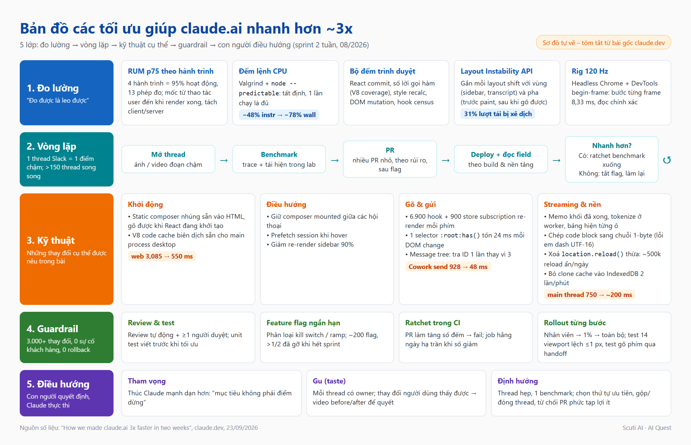
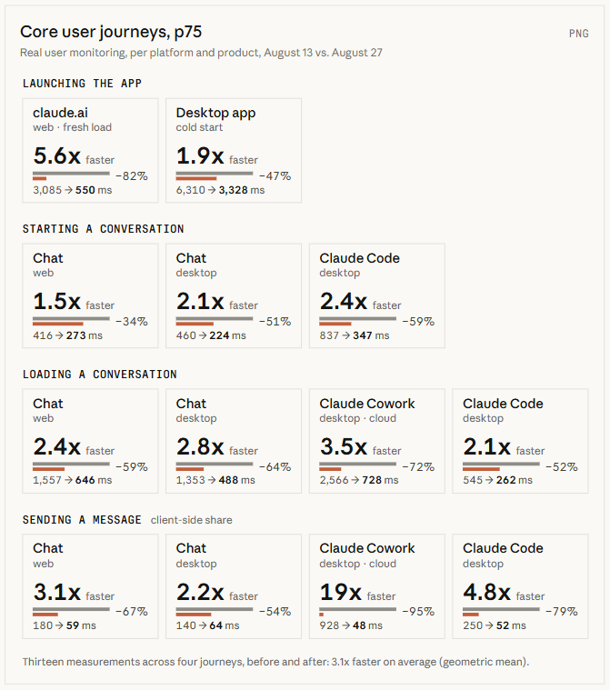
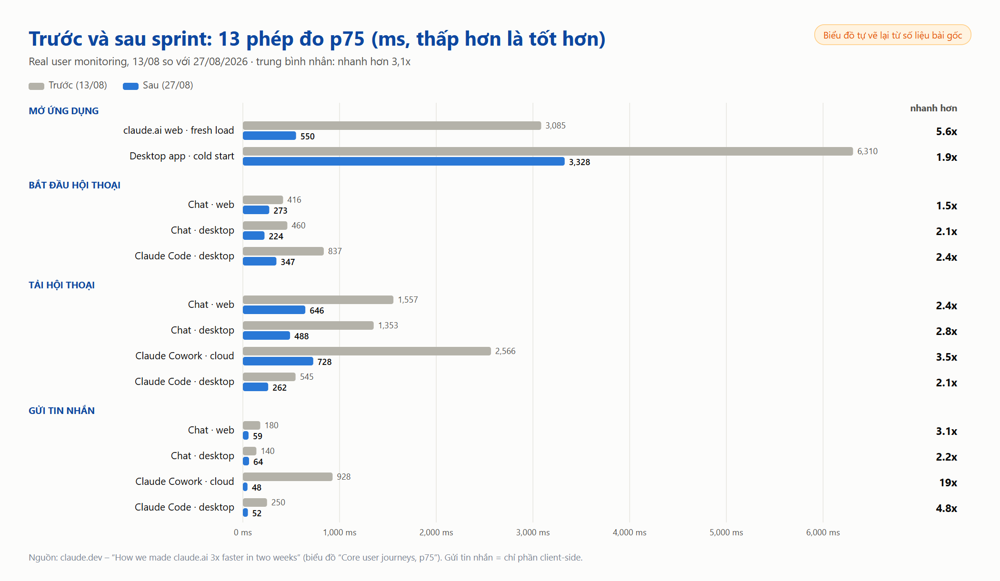
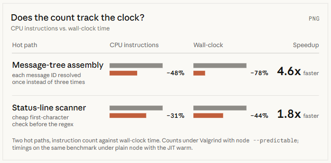
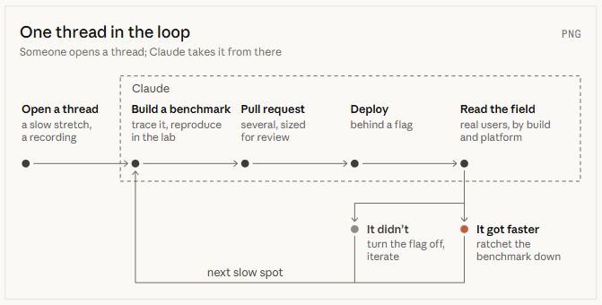
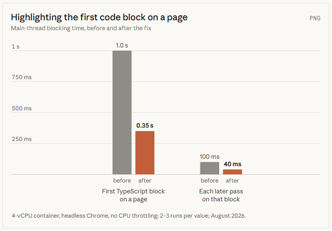
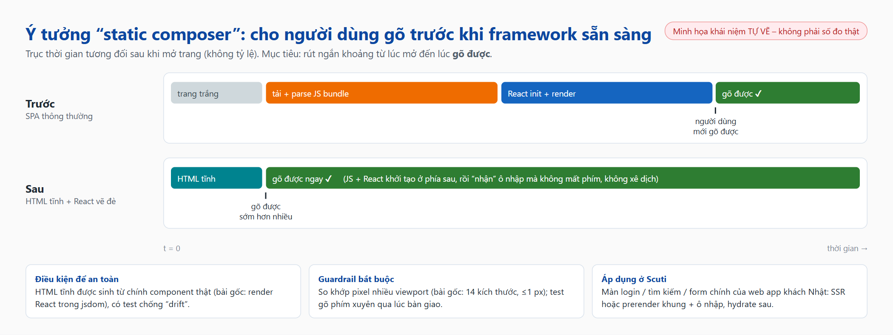
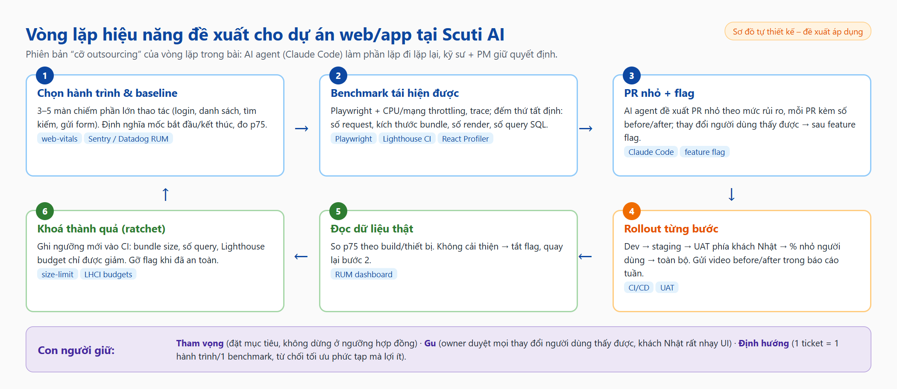

Tóm tắt các kỹ thuật và chiến lược kỹ thuật trong bài “How we made claude.ai 3x faster in two weeks” (claude.dev), kèm bài học cá nhân và cách áp dụng vào dự án web/app tại Scuti AI
Tháng 8/2026, nhóm phát triển claude.ai và Claude desktop app chạy một sprint hai tuần để xử lý lời phàn nàn “app chậm” của người dùng. Kết quả: các hành trình chính nhanh hơn trung bình khoảng 3 lần. Điểm đặc biệt không nằm ở một “mẹo” tối ưu nào, mà ở cách tổ chức công việc: Claude (qua Claude Tag bản beta, chạy một model nghiên cứu nội bộ tương đương Opus 5.5) tự tìm điểm nghẽn, tự dựng benchmark, gửi PR và theo dõi deploy; kỹ sư đặt mục tiêu, cân nhắc đánh đổi và duyệt từng thay đổi.

Trước sprint, nhóm tạo một kênh Slack và giao cho Claude một “bản mô tả công việc” cố định: theo dõi các lần deploy để bắt regression hiệu năng, đánh giá telemetry hiện có có đủ và chính xác không, duy trì dashboard quan sát, chủ động sửa các vấn đề dễ, đề xuất dự án hiệu năng và trao đổi với đồng đội. Nhóm nói rõ: mục tiêu dài hạn là Claude tự chủ nhất có thể, nhưng hiện tại thì chưa.
Bước đầu tiên là chọn đúng thứ cần đo. Claude phân tích dữ liệu sử dụng qua Datadog MCP server và chỉ ra 4 hành trình chiếm khoảng 95% hoạt động: mở app, bắt đầu hội thoại, tải hội thoại cũ và gửi tin nhắn. Nhân với web/desktop và các sản phẩm (Chat, Claude Code, Cowork) thành 13 phép đo. Nhóm bổ sung instrumentation để mọi phép đo đều so sánh được: bắt đầu từ một thao tác người dùng, kết thúc khi kết quả đã render, tách bạch phần client và server.

Sprint mở đầu với khoảng 20 dự án chọn sẵn; Claude ước lượng mức cải thiện (tính bằng ms) của từng dự án, nhóm cộng lại để đặt mục tiêu. Kết quả bất ngờ: 12/13 mục tiêu đạt ngay ngày thứ ba. Nhóm liền đặt mục tiêu mới và yêu cầu Claude tìm thêm thứ để đo – kể cả “ý tưởng điên rồ”.

Vấn đề: số liệu thật từ người dùng (field data) chỉ có sau mỗi lần deploy, còn Claude có thể làm việc liên tục nhiều giờ, kể cả qua đêm. Muốn lặp nhanh hơn nhịp deploy, nhóm cần những phép đo trong lab có thể chạy ngay. Thời gian thực (wall-clock) là thứ người dùng cảm nhận nhưng quá nhiễu để làm cổng CI, nên họ tìm các đại lượng tất định:
node --predictable, so với baseline đã commit – chỉ cần một lần chạy, không cần thống kê.Mỗi benchmark có hai vai: (1) một con số Claude có thể kéo xuống trong lab, (2) một guardrail trong CI chỉ được phép giảm (ratchet). Benchmark nào chập chờn hoặc không tương quan với độ trễ thật thì bị bỏ, để Claude không “leo nhầm đồi”. Nhóm còn yêu cầu Claude chứng minh việc giảm số đếm thực sự làm giảm thời gian thực.

Ví dụ cụ thể: khi profile đường dựng cây hội thoại, Claude thấy 1/4 số lệnh là tra cứu từ điển kiểu megamorphic, cùng một message ID bị tra ba lần. Sửa thành tra một lần; với bộ quét status-line thì thêm một phép kiểm tra ký tự đầu rẻ tiền trước khi chạy regex. Sau đó hai “ratchet” được commit: PR nào làm tăng số lệnh sẽ fail CI, và một job hằng ngày tự hạ trần mỗi khi số giảm.
Mọi việc diễn ra trong cùng một kênh Slack, nhiều kỹ sư và Claude cùng tham gia từng thread. Mỗi thread đi theo cùng một vòng lặp:
Ai đó mở thread về một đoạn chậm, thường kèm ảnh chụp hoặc video màn hình.
Claude lần theo luồng xử lý, tìm hoặc dựng benchmark tái hiện được vấn đề.
Có kết quả tốt trong lab thì gửi PR – thường nhiều PR nhỏ, chia theo mức rủi ro để dễ review; thay đổi người dùng thấy được thì đặt sau feature flag.
Sau khi ship, Claude theo dõi deploy và đọc dữ liệu field.
Nhanh hơn → khoá thành quả bằng cách hạ ngưỡng benchmark (ratchet). Không nhanh hơn → tắt flag và làm lại.
Tiếp tục tìm điểm chậm kế tiếp trong cùng hành trình.

Một video cho thấy các dòng trong sidebar “nhảy” vào sau khi trang đã tải. Chỉ số CLS (Cumulative Layout Shift) không bắt được vì mỗi lần xê dịch chỉ khoảng 0,008, thấp hơn nhiều ngưỡng “tốt” 0,1. Nhóm dùng thẳng Layout Instability API: Claude tạo event telemetry gắn mỗi lần xê dịch với vùng (sidebar, transcript…) và pha (trước first paint, sau khi gõ được), kèm integration test cố ý giữ dữ liệu sidebar tới sau first paint và fail khi có bất kỳ xê dịch nào. Test đỏ 20/20 lần trên main, xanh 20/20 lần trên PR sửa lỗi.
Khi event lên production, dữ liệu cho thấy 31% lượt tải web có thứ gì đó di chuyển sau khi trang đã dùng được. Claude xử lý theo lô các nguyên nhân hàng đầu (header đến muộn, con trỏ trượt khi tên người dùng tải xong, danh sách xê dịch khi thanh cuộn xuất hiện…), xong lô này thì tìm lô tiếp theo.
Khi vòng lặp chạy tốt trên một thread, nhân rộng chỉ là chuyện mở thêm thread – có lúc hơn 150 thread cùng chạy, một thread có thể sinh 50–100 PR, và dần dần chính Claude tự mở thread mới từ các phát hiện của nó. Dưới đây là các thay đổi cụ thể được nêu trong bài, tôi gom theo hành trình:
| Nhóm | Vấn đề / kỹ thuật | Ý nghĩa |
|---|---|---|
| Khởi động | Static composer: nhúng sẵn ô nhập (composer) dạng HTML tĩnh vào trang, React khởi tạo phía sau rồi vẽ đè lên | Người dùng gõ được trước khi framework sẵn sàng |
| Khởi động desktop | Biên dịch sẵn V8 code cache cho main process của desktop shell | Không phải biên dịch lại JS từ đầu mỗi lần mở app |
| Điều hướng | Giữ composer luôn mounted giữa các hội thoại; prefetch session khi hover; giảm 90% re-render của sidebar | Chuyển hội thoại gần như tức thì |
| Gõ phím | “Điều tra dân số” hook: 6.900 hook và 900 store subscription trong đường gõ của composer, re-render mỗi phím | Cắt các subscription thừa trên đường nóng |
| CSS | Một selector :root:has() làm mỗi thay đổi DOM tốn thêm 24 ms style recalc | Một dòng CSS cũng có thể là điểm nghẽn |
| Reload ẩn | Một lời gọi location.reload() sót lại gây khoảng 500.000 lần reload ẩn mỗi ngày mà không metric tải trang nào thấy | Phải trace cả những thứ xảy ra sau first paint |
| Tab nhàn rỗi | Snapshot cache giống hệt nhau bị clone vào IndexedDB hai lần mỗi phút, đều trên main thread | Profile cả tab “không làm gì” |
| Syntax highlight | Chỉ cần một dấu gạch dài (em dash) hay ngoặc kép cong, V8 lưu cả chuỗi dạng UTF-16 → mọi regex highlight chạy đường 2-byte chậm hơn. Sửa 20 dòng: chép code block sang chuỗi 1-byte trước khi highlight | Block code đầu tiên: chặn main thread 1,0 s → 0,35 s |
| Streaming | Memo các khối đã hoàn tất (bỏ việc O(độ dài tin nhắn) mỗi chunk), chuyển tokenize code fence sang worker, hiện bảng từng ô | Tổng thời gian chặn main thread ~750 ms → ~200 ms |

Có hai hệ quả phụ đáng chú ý: khoảng 1/3 số PR có kèm thêm telemetry hoặc guardrail, mỗi công cụ đo mới lại sinh thêm thread; và vì mọi thứ diễn ra công khai trong một kênh, các team khác bắt đầu mang thay đổi của họ vào để được review hiệu năng.
Vì gần như mọi thứ đụng vào đều là đường nóng (first paint, composer, transcript), các cơ chế an toàn được dựng trước khi tăng tốc:
Riêng static composer vốn “mong manh theo thiết kế” (lệch một pixel là lộ), nên có hàng chục guardrail: HTML tĩnh được sinh bằng cách render chính component React trong jsdom và có test chống lệch; bộ integration test so trang tĩnh với bản React ở 14 kích thước viewport, sai số tối đa 1 px; một test gõ phím xuyên qua thời điểm bàn giao và fail nếu mất hay đảo phím; ngoài thực tế, mỗi lần bàn giao báo cáo xê dịch tới 0,1 px và Claude mở thread cho mọi event khác 0.

Bốn giờ sau khi bật static composer nội bộ, một đồng nghiệp gửi video: thỉnh thoảng mở claude.ai trong tab mới thì ô nhập tụt xuống ~10 px. Claude phân tích từ video: trên trình duyệt do tổ chức quản lý, trang New Tab của Chrome có footer 56 px; Chrome prerender trang ngay khi người dùng gõ URL, ở chiều cao ngắn hơn đó, rồi mới resize khoảng 0,1 s sau first paint. Composer đặt ở 18% chiều cao nên tụt 0,18 × 56 ≈ 10 px – khớp với video. Lỗi luôn tiềm ẩn, chỉ lộ ra vì trang giờ paint sớm hơn. Cách xử lý: cố định layout qua lần resize và thêm test mô phỏng luồng prerender.
Vòng lặp hiệu quả nhưng không tự động hoàn toàn. Nhóm mô tả vai trò con người gồm ba phần:
| Vai trò | Trong bài |
|---|---|
| Tham vọng | Mặc định Claude khá thận trọng: tạo ticket, rào đón tính khả thi, ước lượng dư. Vì đã tin vào guardrail, kỹ sư liên tục thúc nó mạnh dạn hơn (“please be braver”) và nhắc rằng đạt mục tiêu không phải là điểm dừng. |
| Gu (taste) | Mỗi thread có một owner là người. Thay đổi người dùng cảm nhận được đều kèm ảnh/video trước–sau để owner quyết: bảng hiện từng ô hay từng hàng? skeleton hiện ngay hay sau nửa giây? hiệu ứng fade từng chữ có đáng 1/5 ngân sách frame? |
| Định hướng | Thread cố ý hẹp: một benchmark hoặc một hành trình. Con người quyết thứ tự ưu tiên, gộp các thread dẫm chân nhau, đóng thread khi lợi ích giảm dần. Một PR 900 dòng bị từ chối vì 2 ms mỗi lần gửi không đáng để duy trì một build plugin. |
Một nhánh phụ cho thấy mọi mảnh ghép hoạt động cùng nhau. Khi demo tối ưu regex cho syntax highlight, Claude gắn kèm video stream một câu trả lời dài, có đồng hồ FPS tính từ timestamp của animation frame. Kỹ sư hỏi: có đẩy lên 120 fps được không? Trình duyệt trong rig đo mặc định chạy 60 Hz, nhưng Claude dùng DevTools begin-frame control để bước frame tất định ở 120 Hz (đúng 240 frame cho 240 begin-frame, mỗi frame 8,33 ms) – nhờ vậy câu hỏi “frame này có vừa ngân sách không” có câu trả lời chính xác thay vì nhiễu.
Từ đó Claude đi từng frame của một câu trả lời dài: memo các khối đã xong, đưa tokenize sang worker, hiện bảng theo từng ô. Riêng thread này có gần 60 PR. Kết quả: câu trả lời dài chặn main thread tổng ~200 ms thay vì ~750 ms, dùng khoảng 1/3 CPU, giữ 120 fps từ đầu đến cuối trên MacBook 120 Hz; rig 120 Hz trở thành job chạy hằng đêm để bắt regression.
Phần cuối bài nói còn việc phải làm: p95, các hành trình khác và hội thoại rất dài; một số đóng góp đã đi ngược lên upstream (Electron, Chromium, Node.js) và sẽ có bài riêng.
:has(), em dash UTF-16) không ai đoán ra được; chúng chỉ lộ diện khi có một con số cụ thể để nhìn vào.Scuti AI làm outsourcing web/app cho khách hàng Nhật: không có hàng triệu người dùng hay đội riêng về hiệu năng như Anthropic, nhưng các ý tưởng cốt lõi vẫn thu nhỏ được. Đây là phiên bản tôi đề xuất:

| Kỹ thuật trong bài | Cách áp dụng ở Scuti |
|---|---|
| 4 hành trình = 95% hoạt động | Ngay từ giai đoạn đề xuất/kickoff, cùng khách Nhật chốt 3–5 màn quan trọng nhất (login, danh sách, tìm kiếm, đăng ký…) và ghi chỉ tiêu p75 vào 非機能要件 (yêu cầu phi chức năng). |
| Benchmark trong lab + metric tất định | Script benchmark E2E cho từng hành trình với throttling CPU/mạng; trong CI đếm những thứ ổn định: số request, kích thước bundle JS, số query SQL mỗi API (bắt N+1), số re-render (React Profiler). |
| Ratchet trong CI | size-limit / Lighthouse CI budget / test đếm query: PR làm tăng thì fail; khi giảm thì cập nhật ngưỡng mới vào repo. |
| Static composer | Với màn đầu tiên (login, search), dùng SSR/prerender khung trang và ô nhập để người dùng thao tác được sớm; có test chụp màn hình so khớp và test gõ phím khi hydrate. |
| Prefetch khi hover, giữ component mounted | Áp dụng cho danh sách → chi tiết (Next.js prefetch, React Query prefetchQuery khi hover). |
| Layout Instability theo vùng | Gửi layout-shift entry kèm tên vùng lên Sentry/Datadog; khách Nhật rất nhạy với UI “giật”, đây là điểm cộng chất lượng dễ thấy. |
| Flag + rollout từng bước | Dev → staging → UAT phía khách → một phần người dùng → toàn bộ; mỗi flag ghi rõ loại (kill switch/ramp) và ngày gỡ. |
| Video before/after cho người có “gu” | Đính kèm video trước/sau vào báo cáo tuần (週次報告) cho khách: dễ hiểu hơn bảng số, giúp khách duyệt nhanh thay đổi UI. |
Video dưới đây quay lại quá trình đọc bài và tổng hợp: mở bài gốc, đọc qua các phần chính, xem lại các sơ đồ tự vẽ, rồi kết thúc ở chính blog này cuộn từ trên xuống dưới.
Mọi con số trong mục 1–8 lấy từ bài gốc. Các sơ đồ và đề xuất ở mục 9–10 là của tác giả blog này.